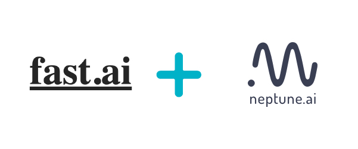
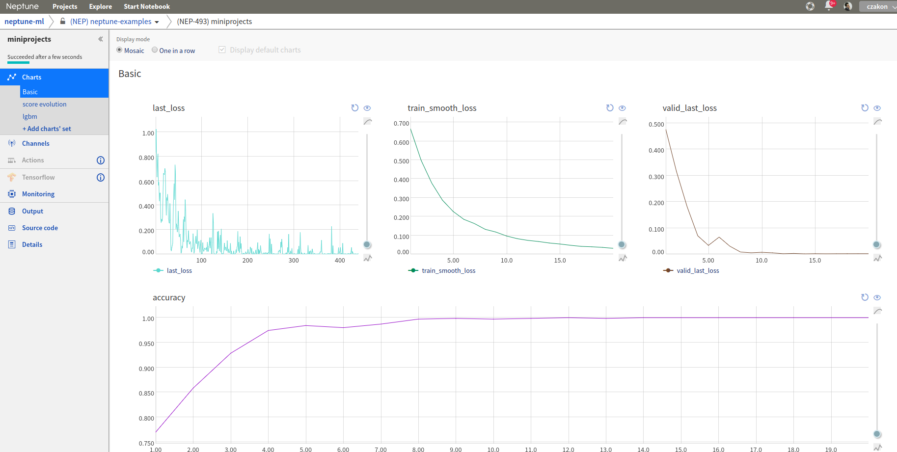

Log fast.ai metrics to neptune
{kind=link}
Prerequisites
Integration with fast.ai framework is introduced as a part of Neptune-contrib - open source project curated by Neptune team.
Please install it before you continue. Check the docs if you need more info.
pip install neptune-contrib
pip install neptune-contrib[monitoring]
Create your databunch
from fastai.vision import *
path = untar_data(URLs.MNIST_TINY)
data = ImageDataBunch.from_folder(path, ds_tfms=(rand_pad(2, 28), []), bs=64)
data.normalize(imagenet_stats)
Create the learner find your optimal learning rate and plot it
learn = cnn_learner(data, models.resnet18, metrics=accuracy)
learn.lr_find()
learn.recorder.plot()
{kind=link}
Create an experiment and add neptune_monitor callback
import neptune
from neptunecontrib.monitoring.fastai import NeptuneMonitor
neptune.init(project_qualified_name='USER_NAME/PROJECT_NAME')
with neptune.create_experiment(params={'lr': 1e-2}):
learn.callbacks.append(NeptuneMonitor())
learn.fit_one_cycle(20, 1e-2)
Monitor your fast.ai training in Neptune
Now you can watch your fast.ai model training in neptune!
{kind=link}
Full fast.ai monitor script
Simply copy and paste it to fastai_example.py and run.
from fastai.vision import *
import neptune
from neptunecontrib.monitoring.fastai import NeptuneMonitor
neptune.init(project_qualified_name='USER_NAME/PROJECT_NAME')
path = untar_data(URLs.MNIST_TINY)
data = ImageDataBunch.from_folder(path, ds_tfms=(rand_pad(2, 28), []), bs=64)
data.normalize(imagenet_stats)
learn = cnn_learner(data, models.resnet18, metrics=accuracy)
learn.lr_find()
learn.recorder.plot()
with neptune.create_experiment(params={'lr': 1e-2}):
learn.callbacks.append(NeptuneMonitor())
learn.fit_one_cycle(20, 1e-2)